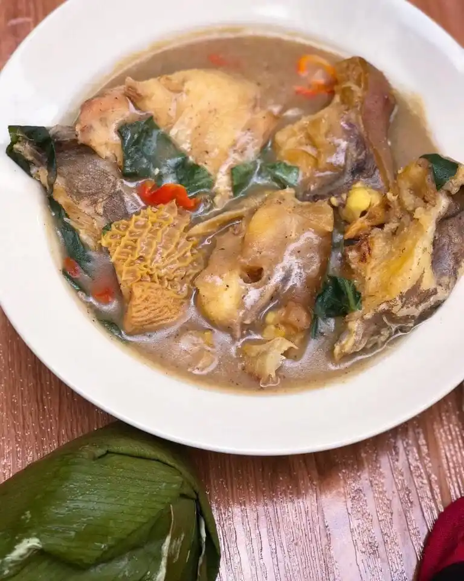

Nsala Soup Recipes

NSALA SOUP
Ofe Nsala (White Soup) is a great easy-to-make delight from Nigerian soups that all the family will enjoy – just make sure you keep the ingredients simple and spices normal. A hearty soup to chase away the cold on dark winter evenings. Nsala soup or white soup is a traditional tasty soup recipe that is peculiar to the riverine areas of Nigeria. This really is one of the African dishes that is well enriched with many healthy flavours – raw white yam, fresh fish and assorted meat. You can gain maximum flavour by infusing the uziza and ogiri okpei. Ofe nsala goes well with all kinds of fufu!
Ingredients
- Goat meat
- Catfish
- Dried prawns
- White yam
- Uziza leaves
- Locust beans (ogiri okpei, iru, dawadawa)
- Seasoning cubes; Maggi/Knorr
- Crayfish
- Habanero peppers
- Salt to taste
Steps
- Wash and clean the goat meat, cut to desired chunks. Cut the catfish into thick chunks, pour very hot water on the fish to wash off the slimy, drain the water, and set the fish aside. Place the goat meat in a cooking pot and pour enough water to cover the meat. Add the seasoning and cook till almost done. Then add the fish and cook till both meat and fish is done.
- While the meat is cooking, peel and cut the yam to little slices. Boil yam in a different pot till soft. When soft, pound with a mortar and pestle till it turns to a smooth paste, then set aside. Alternatively; you can substitute raw yam with yam powder or raw cocoyam or cocoyam powder.
- Blend the uziza leaves together with the chilli pepper and crayfish, set aside.
- When the meat and fish are almost done, add in the blended mixture and ogiri okpei. Now, stir-in add the yam paste in small lumps, stir and add salt to taste.
- Cover pot and allow to cook at high heat till all the yam paste dissolves and thickens the soup. Think that the yam paste will make the soup too thick? You can remove some the yam paste that are yet to dissolve. Or add little water to loosen soup.
- Your nsala soup is ready to be served with your favourite fufu – eba, semolina, amala, pounded yam etc.
- Enjoy!